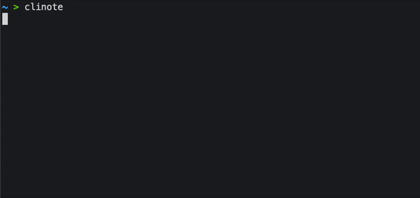
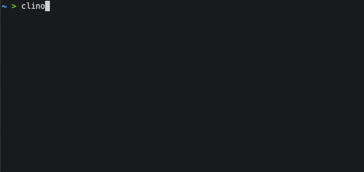
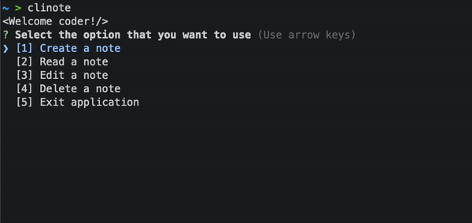

Clinote is a simple note taking app in the terminal. Take notes in an easy way and keep your information without leaving your workspace.
Source code and installation
Clinote features are very basic and minimal, aiming for fast note taking and reading.
You can add many notes as you want, just execute the clinote command and select the first option. Quickly you be able to add a title and content to your note and store it (See example in the top image).
After creating a note you can read it in the command line, just select the read note option in the menu.
You made a mistake writing your note? You can edit the title or content of your note easily.
Don't need a note anymore? You can delete it and forget its existence, just be careful, this action can not be reverted.
